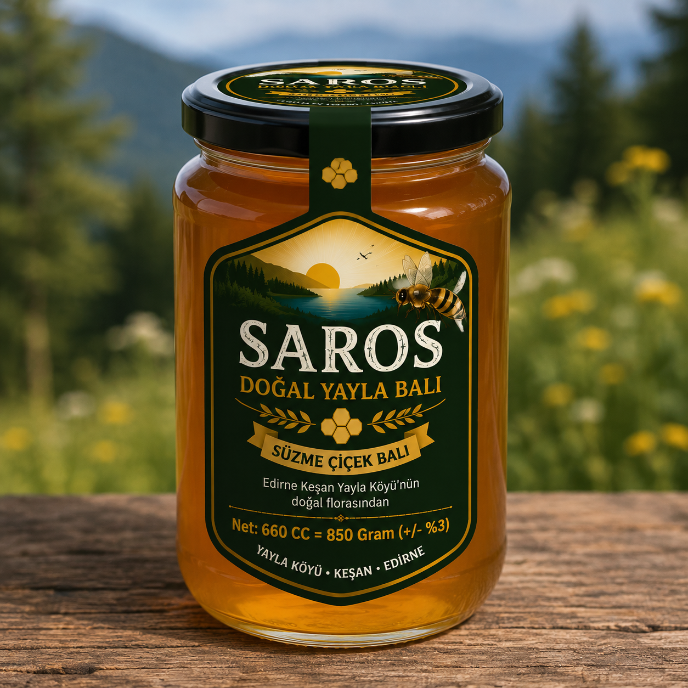

Süzme Çiçek Balı
✓ StoktaNet: 850 g · 660 cc (± %3)
500 ₺Edirne Keşan Yaylaköy'ün doğal florasından elde edilen süzme çiçek balı. Geleneksel yöntemlerle, katkı maddesi kullanılmadan üretilir. Doğanın sunduğu en saf lezzetlerden biridir.
Saklama: Serin, kuru ve güneş ışığından uzak yerde muhafaza ediniz. Kristalleşme doğal bir olaydır; balın kalitesini etkilemez. Ilık su banyosunda çözündürerek tüketebilirsiniz. 1 yaşından küçük bebeklere bal yedirilmemelidir.